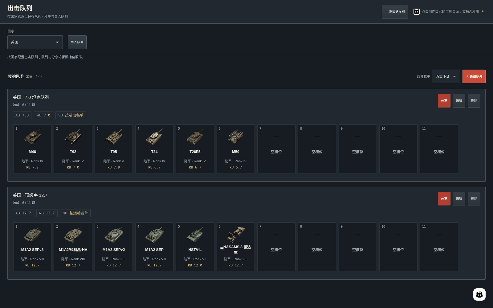

War Thunder 研发工作台
一个面向《战争雷霆》玩家的中文研发与配队工具：查看科技树、规划载具与配件研发、估算研发点与费用，以及管理和分享出击队列。
在线体验 → · 功能预览 · 本地运行 · 数据与计算 · 参与贡献

本项目是玩家自制的非官方工具，与 Gaijin 无隶属关系。数据附有更新时间，实际载具、研发点、分房权重与解锁要求以游戏内为准。
能做什么
- 看科技树：十个国家、陆军 / 航空 / 远洋舰队 / 近海舰队，保留前置关系与折叠组，区分常规和特殊载具。
- 算载具研发：结合已有载具、目标前置、等级门槛与补研偏好生成待研清单，支持手动设置计价起点。
- 算配件研发：独立计算单车配件成本，扣除已完成配件与其余已投入 RP。
- 管出击队列：按国家保存多个队列，11 个有序槽位，展示各模式权重，支持拖动排序和分享码导入导出。
- 汇总报价：自填每万 RP 单价，将载具和配件报价加入本地购物车，共享载具前置去重。
- 保存在本地：研发进度、队列与购物车留在当前浏览器，无需登录，不连接游戏账号。
功能预览
以下展示各项功能及使用示例。账号进度、单价与队列均为示例设置；游戏数据更新于 2026-10-19。
1. 首页：先选择国家
首次打开时展示国家入口，不提前下载载具与配件资料。选择国家后，一次加载该国全部军种、载具、配件与分享码字典；同国内切换军种无需再加载另一份数据。再次访问会恢复上次选择。

2. 科技树：保留研发关系
沿箭头查看前置载具，展开折叠组，搜索中文或英文型号并定位路线。AB / RB / SB 切换后，卡片展示对应模式的权重。金币、礼包、联队、活动等独立获取载具与常规研发分区展示；支持缩放与全屏。
点击载具可查看大图和研发资料，标题直达官方 Wiki，两个入口分别进入载具研发与配件研发。

3. 载具研发：按账号进度生成清单
选择目标、填写已有载具和单价后，工具计算目标、必要前置与等级补位。已有记录、目标已投入 RP、数量门槛和手工核对项共同构成报价依据；未知 RP 会提示核对，不直接视为零。
不同等级的计价起点
“已开放等级 / 计价起点”用于表达账号已经走到哪一级。低于起点的载具不计价，同级及以上的必要前置、数量门槛仍参与计算；这一设置不会把低级载具写成真实已拥有。
以下以 ZTZ99A 为目标、每万 RP ¥12.50 为演示单价，其他已有记录保持为空：
| 设置 | 演示结果 | 含义 |
|---|---|---|
| 从 Rank VIII 计价 | 810,000 RP / ¥1,012.50 | 包含同级前置 WZ1001(E)/长炮和目标 |
| 从 Rank VII 计价 | 2,065,000 RP / ¥2,581.25 | 继续计入 VII 级必要前置与补位 |


自定义筛选与补研偏好
在“其他已有载具与补研偏好”中，型号搜索、Rank 等级和载具类型可以组合使用。“已有载具”记录已购买或领取的车辆；“补研选择”可指定、排除或自动选择补位车辆。筛选只改变列表展示，不会清除其他等级的记录。
下图组合使用 ZTZ 搜索 + 常规研发 + Rank VII，同时保留右侧完整计算结果。

4. 配件研发：单车成本单独计算
配件面板使用独立单价。勾选已完成配件后扣除对应成本，再扣除未勾选配件中已投入的 RP，显示剩余研发量与金额。下图以 ZTZ99A、每万 RP ¥10.00、另投入 5,000 RP 为例。
完整总成本和逐项求和核对通过时，才启用逐项扣除；缺失数据可手动核对。高级载具默认已解锁配件，与 Wiki 记录的原始完整配件成本分别处理。

5. 出击队列：保存、配置与分享
出击队列有独立页面，默认展示当前国家已保存的队列。新建或编辑时进入配置，点击“保存队列”才写入；取消保留原先的保存结果。每条队列标题旁都有分享入口。

横向槽位与筛选
乘员槽位始终横向排列，可横向滚动。拖动柄按住即可排序，卡片支持长按拖动，键盘可用 Alt + ← / → 调整顺序。选车支持军种、Rank、获取类型和型号搜索，区分常规、精英、礼包、联队、市场及其他特殊载具。
以下五组都是 陆战 RB 演示队列。队列可包含防空与轻型车辆；此处用于展示配置和权重计算，不是最优配队建议。美国“顶级房”在当前数据中为 12.7。
| 国家 | 队列 | 主要演示载具 |
|---|---|---|
| 中国 | 11.7 | MBT2000、ZTZ96B、VT5、ZTZ99 (III 类)、ZBD04A、红旗-17 |
| 德国 | 5.7 | 虎式 H1、豹式 D、四号坦克/70 (V)、PaK 43 武器运载车、犀牛、东风 II |
| 德国 | 6.7 | 虎王、斐迪南、猎虎、leKPz M41、豹式 F、球形闪电 |
| 美国 | 7.0 | M46、T92、T95、T34、T26E5、M50 |
| 美国 | 顶级房 12.7 | M1A2 SEPv3、M1A2/战利品-HV、M1A2 SEPv2、M1A2 SEP、HSTV-L、NASAMS 3 雷达车 |
中国 · 11.7：展示常规、礼包与联队车辆混合配置，以及 Rank VII 筛选。

德国 · 5.7：以虎式 H1 与豹式 D 为核心，搭配坦歼和防空。

德国 · 6.7：展示重坦、坦歼、轻坦与防空的六车槽位。

美国 · 7.0：演示 M46、T92、T95 与较低权重车辆组合。

美国 · 顶级房 12.7：展示多辆 M1A2 与轻坦、防空系统的队列。


权重规则与分享码
配置后同时展示 AB / RB / SB 的适用结果：陆战 RB 的飞机使用陆战专属权重，陆战 AB 不将飞机算入队列；陆战 SB 提示按活动名单核对，不编造一个数值分房权重。空战和海战按各自规则计算，规则来源可在页面展开查看。
分享时展示可选中文字并尝试复制；导入通过弹窗进行，无需常驻输入框。

分享码固定 24 位，区分大小写：前两位是国家码，其后 11 组各两位对应有序槽位，00 表示空位。分享码包含国家与载具顺序，不含队列名称、战斗类型和空战 RB 出击飞机选择；导入后请核对这些设置。
示例队列与分享码可直接查看，复制分享码即可导入。
6. 购物车：合并研发报价
将载具与配件计算结果加入购物车，可以统一查看待研量和费用。同一国家、军种的共享载具前置会去重；单价冲突时暂停最终报价并提示核对。支持导出报价和复制清单。

金额按 待研 RP ÷ 10,000 × 自填单价 计算，最终四舍五入到分，不按整万 RP 向上取整。不含购车银狮、金币或乘员训练费用。
本地运行
需要 Node.js 22.12+（或符合 Vite 8 要求的更新版本）、pnpm 12.3.4。刷新数据还需要 Python 3 与 curl。依赖版本已固定，请保留 pnpm-lock.yaml。
pnpm install --frozen-lockfile
pnpm dev
开发地址为 http://localhost:5178。开发命令会先从仓库的规范 JSON 生成国家模块，不要求先联网刷新游戏数据。
pnpm run check # 类型、Lint 与数据一致性
pnpm run build # 构建并检查产物与十国数据哈希
pnpm run preview # http://localhost:4178
可分别运行 pnpm run typecheck、pnpm run lint、pnpm run check:data。页面入口为 #/tree 与 #/lineups；国家、军种和模式可通过外层查询参数指定，例如 ?country=china&category=ground&mode=rb#/tree。
部署
pnpm run build 输出静态文件到 dist/，可部署到支持相对静态资源路径的站点。上传全部构建资源后再切换 HTML，并保留旧哈希资源供已打开的页面继续使用。国家资料随哈希 JS 模块发布，不发布独立 JSON 文件。
本仓库采用 QMuse 模板，Vite 插件统一由 @qmuse/vite-config 配置。使用 QMuse 时，应绑定自己的应用，再通过 qmuse-cli 导入；.qmuse/ 为本地平台配置，不纳入 Git。publish / release 脚本是原维护环境的专用发布流程，不能直接作为通用部署命令使用。
数据与计算
数据来源
- 科技树、载具资料、图片、RP 与配件成本：War Thunder Wiki。
- 简体中文名称与等级门槛：公开的原版游戏文件镜像 War-Thunder-Datamine。本地 JSON 保留固定版本、原文、哈希与核对时间；它不是官方 API。
- 分房规则：来源记录在 data/lineup-rules.json。
- Logo、国旗与壁纸使用原始官方 HTTPS 地址；图片可用性取决于对应站点。来源记录在 data/branding.json 与 data/flags.json。
当前收录 10 国、34 棵可用科技树、3,124 条载具记录；缺少对应军种的国家显示空状态。无法可靠匹配的少量配件名称保留英文，不使用臆测翻译。
数据组织与更新
| 路径 | 内容 |
|---|---|
data/trees.json、research.json、planning.json |
科技树、研发点与等级门槛 |
data/modifications.json |
配件总成本、逐项成本与核对依据 |
data/localization.json |
原版简体中文映射与来源 |
data/lineup-rules.json、lineup-codebook.json |
分房规则与稳定分享编码 |
src/routes/ |
TanStack 文件路由 |
src/Workbench.tsx |
共享状态与国家资料加载 |
src/generated/ |
生成的导航清单与国家 JS 运输模块 |
scripts/、schema/ |
采集、构建、校验与数据结构 |
docs/screenshots/、docs/examples/ |
功能图片与示例队列 |
pnpm run refresh # 联网刷新规范 JSON，不发布
pnpm run refresh:localization # 单独更新中文映射
pnpm run check
pnpm run build
刷新失败保留此前的核对数据与时间，不把失败请求标记成新快照。RP 未知与零成本有明确区别；配件逐项成本须核对完整总额。等级自动补位提供有效方案，不承诺全局最省。
分享编码字典只追加，不能重排、重编号或复用退休编码，以保证旧分享码稳定。
本地存储
研发进度、配件进度、购物车与队列分别保存在当前浏览器。工具会检查已下载资料是否完整；自动清理过期资料时，不会删除个人进度或队列。
这些数据不自动跨浏览器、设备或域名同步，也不会从游戏账号自动读取；清除站点数据会移除本地记录，请按需导出购物车或保存队列分享码。
参与贡献
欢迎提交功能建议、数据问题与修复。反馈数据问题时，请附上国家、军种、载具名称、模式、游戏版本和可核对来源；界面问题请附截图与屏幕尺寸。
提交代码前运行 pnpm run check 与 pnpm run build。载具数据和来源应维护在 data/*.json，不要写进 JSX；同时保留已有存储格式与分享码兼容性。开发约定见 AGENTS.md。
许可与致谢
项目代码采用 MIT 许可证，允许使用、修改和再分发，需保留版权声明与许可证。
War Thunder 名称、商标、游戏图片及第三方数据归各自权利人所有，不在本项目代码的 MIT 授权范围内，仍遵循各自的授权条件。
感谢 War Thunder Wiki、游戏文件镜像维护者，以及 QMuse 开发模板与托管服务。